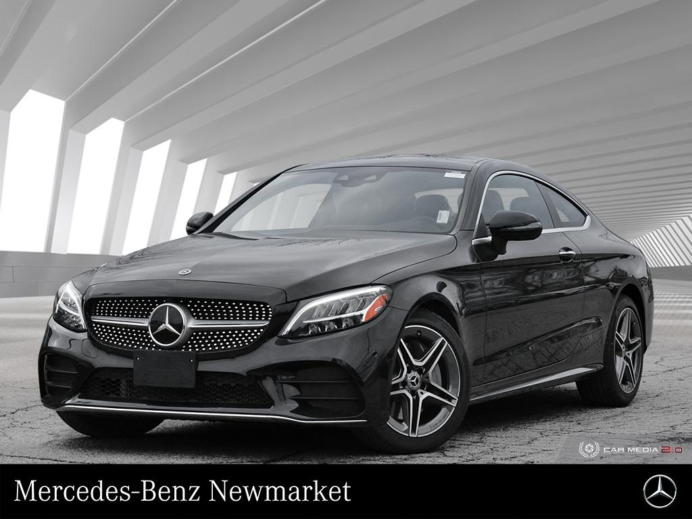

Mercedes-Benz ,commonly referred to as Mercedes and sometimes Benz ,is a German luxury and a commercial vehicle automative brand established in 1926.Mercedes -Benz AG (a Mercedes -Benz Group subsidiary established in 2019 ) is hedquartered in Stuggardt,Baden-Wurttemberg,Germany .Mercedes -Benz AG produces consumer luxury vehicles and light commercial vehicles badged as Mercedes -Benz .The slogan for the brand is "Best or nothing"
Mercedes -Benz traces its origins to Karl Benz's first internal combustion engine in a car ,seen in the Benz Patent Motorwagen -financed by Bertha Benz's dowry and patented in January 1886.
The Mercedes automobile was 1 st marketed in 1901 by Daimler Motoren Gesellschaft (DMG)

Over the years Mercedes-Benz has produced and introduced many electronic and mechanical innovations and safety features that later became common.